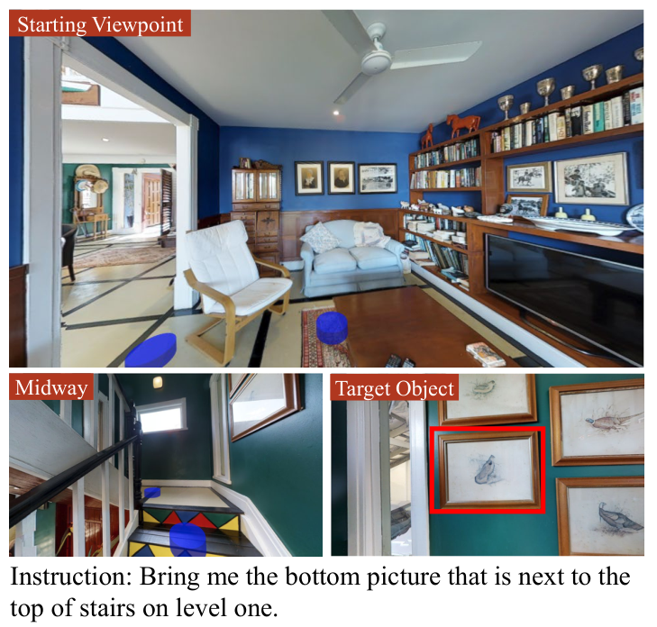
01 · REVERIE Fig. 1
PDF p1 · 面板 a · 优先级 1 · 语言任务、anchor 与空间关系
Habitat：否（Matterport3D Simulator，非 Habitat）
借鉴 instruction → remote object → viewpoint 的叙事关系。
区别：REVERIE 使用离散全景 waypoint，不包含你的 3D pose feasibility。

PDF p1 · 面板 a · 优先级 1 · 语言任务、anchor 与空间关系
Habitat：否（Matterport3D Simulator，非 Habitat）
借鉴 instruction → remote object → viewpoint 的叙事关系。
区别：REVERIE 使用离散全景 waypoint，不包含你的 3D pose feasibility。
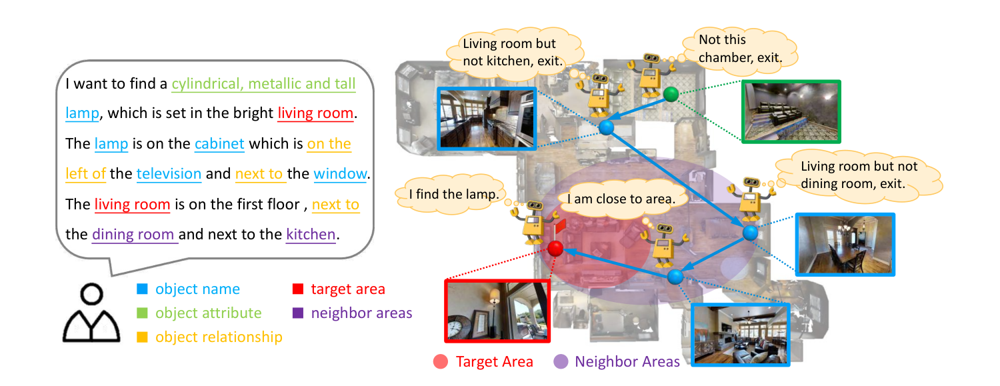
PDF p2 · 面板 a · 优先级 1 · 语言任务、anchor 与空间关系
Habitat：否（Matterport3D-based FAO simulator）
直接参考你的 coarse-to-fine anchor/region 叙事。
区别：SOON 的搜索过程是导航策略，不是相机候选生成。
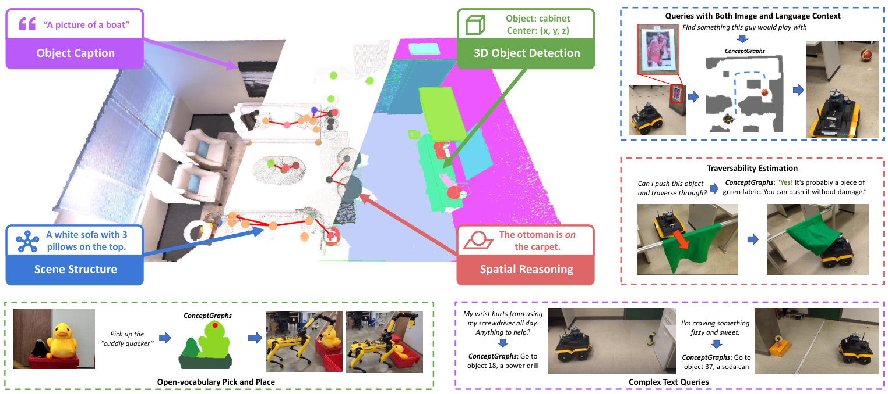
PDF p1 · 面板 a · 优先级 1 · 语言任务、anchor 与空间关系
Habitat：否（RGB-D robot mapping）
适合画 mapped anchor、target 和 relation edge。
区别：图中包含完整建图系统，Fig.6 只需借用对象关系层。
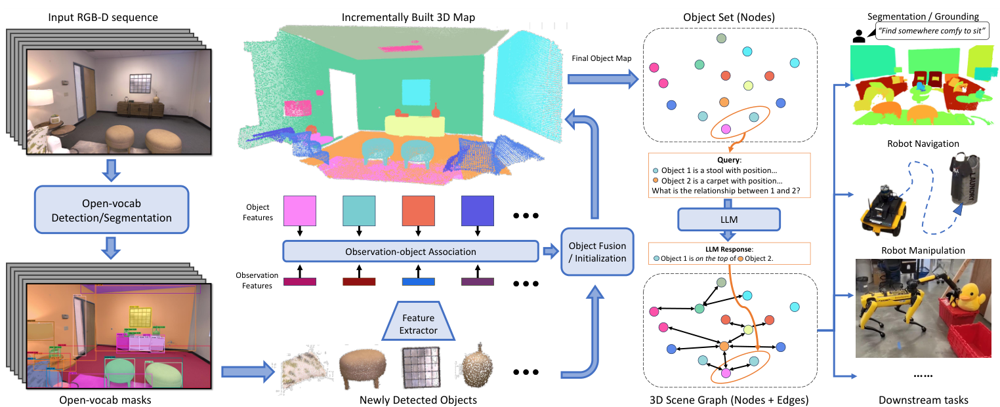
PDF p3 · 面板 a · 优先级 1 · 语言任务、anchor 与空间关系
Habitat：否（RGB-D robot mapping）
只借鉴右侧的物体实例与关系边，帮助读者看懂 anchor 来自已有地图。
区别：上游建图流程不属于 Fig.6，不能整套照搬。
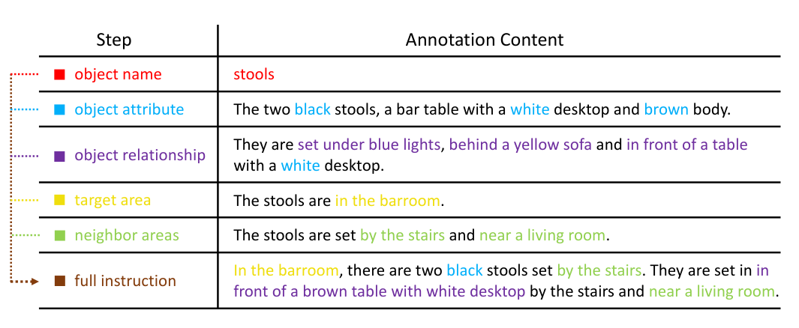
PDF p4 · 面板 a · 优先级 1 · 语言任务、anchor 与空间关系
Habitat：否（Matterport3D-based FAO simulator）
借鉴同色短语与场景实体的对应；只突出 anchor / relation / target。
区别：原图是数据标注步骤，不是你的任务解析算法。
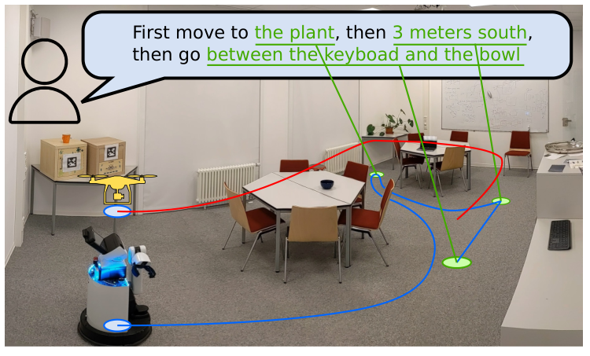
PDF p1 · 面板 a · 优先级 1 · Observation region 与目标样本
Habitat：是（论文实验含 Habitat；所选图为真实机器人示例）
借鉴用同一场景表示语言中的物体参照与相对位置。
区别：定位的是导航目标点；你的输出是可观察区域及样本。
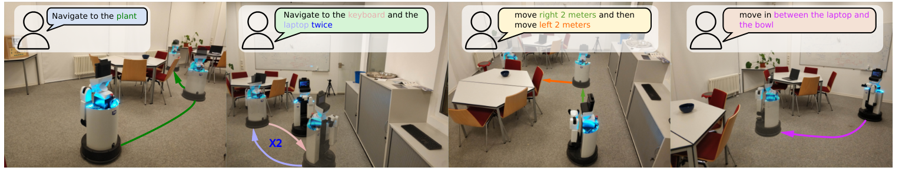
PDF p2 · 面板 a · 优先级 1 · Observation region 与目标样本
Habitat：是（论文实验含 Habitat；所选图为真实机器人示例）
借鉴按空间关系展示不同目标位置，替换成桌下、周围、表面等区域。
区别：原图有机器人路线；Fig.6(a) 保留区域标记即可。
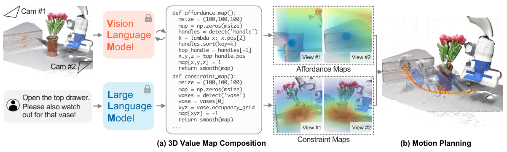
PDF p4 · 面板 a · 优先级 1 · Observation region 与目标样本
Habitat：否（操作任务；所选图为真实机器人）
借鉴先分别可视化目标区域和禁止区域，再组合成几何表示。
区别：操作用 value map 不等于你的离散 region samples，也不是视角生成。
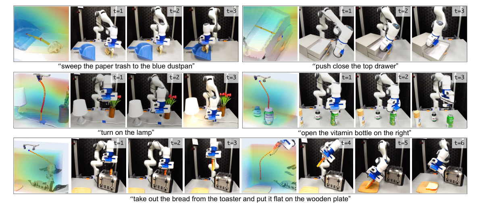
PDF p5 · 面板 a · 优先级 2 · Observation region 与目标样本
Habitat：否（操作任务；所选图为真实机器人）
借鉴半透明三维区域叠加物体的画法，使区域不是孤立的抽象框。
区别：仅作为区域画法；不要搬入机械臂轨迹或假定目标已知。
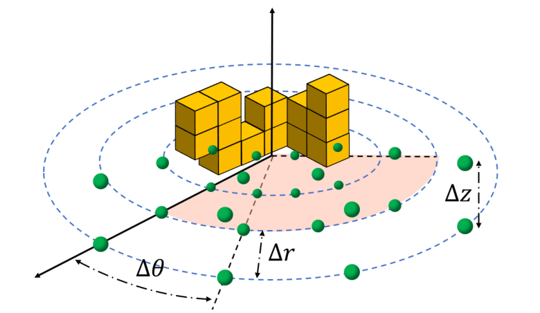
PDF p3 · 面板 b · 优先级 1 · 相机位姿参数化与候选采样
Habitat：否（无人机探索仿真）
直接借鉴 Fig.6(b) 的柱坐标候选布局。
区别：FUEL 没有语言目标或竖直 FoV 高度区间。
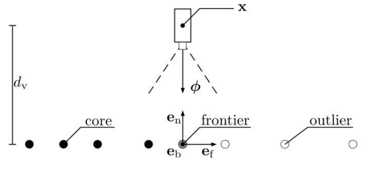
PDF p4 · 面板 b · 优先级 1 · 相机位姿参数化与候选采样
Habitat：否（主动视觉仿真）
适合画 region sample 到相机的朝向关系。
区别：只沿法向生成，不能覆盖你的多 azimuth/multi-height。
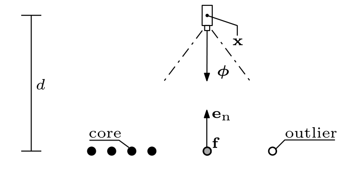
PDF p9 · 面板 b · 优先级 1 · 相机位姿参数化与候选采样
Habitat：否（UR10/UAV 仿真）
适合做候选相机小图标和视锥的简洁样式参考。
区别：没有候选集预算和角度多样性。
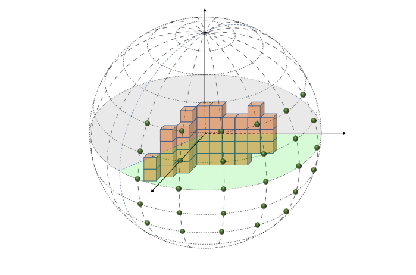
PDF p3 · 面板 b · 优先级 1 · 相机位姿参数化与候选采样
Habitat：否（无人机探索仿真）
可借鉴三维候选点云和目标区域的空间关系。
区别：球面采样比你的固定 pitch 更自由。
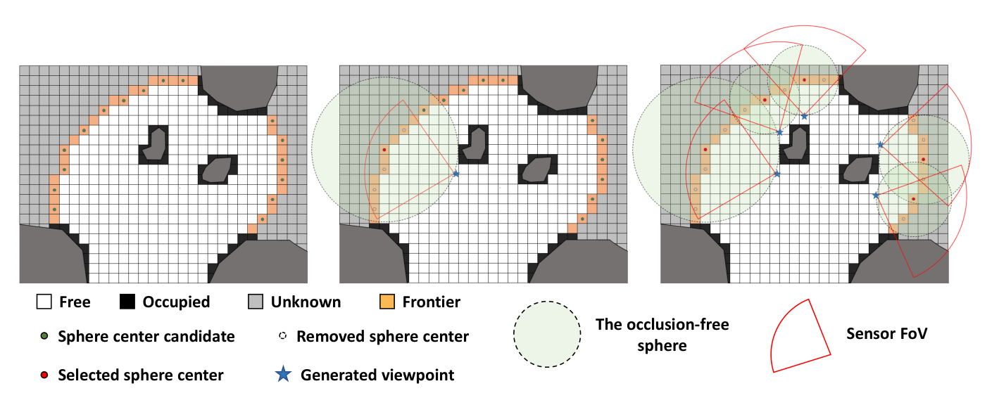
PDF p4 · 面板 b · 优先级 1 · 相机位姿参数化与候选采样
Habitat：否（无人机探索仿真）
适合画候选生成和重叠删除的顺序。
区别：覆盖的是 frontier，不是 target samples。
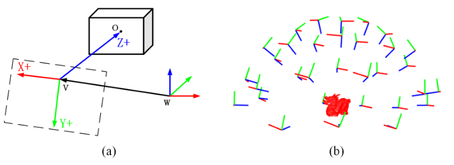
PDF p6 · 面板 b · 优先级 1 · 相机位姿参数化与候选采样
Habitat：否（OctoMap/object reconstruction）
适合表示候选池大小和相机位姿参数。
区别：5-DOF object capture 与你的飞行高度约束不同。
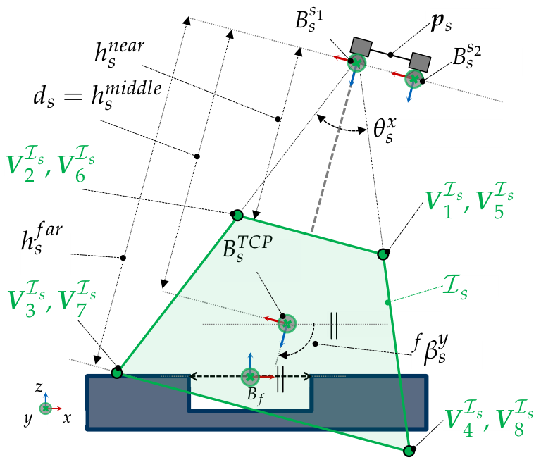
PDF p7 · 面板 b/c · 优先级 1 · FoV、碰撞、遮挡与可见性判定
Habitat：否（机器人视觉仿真）
直接参考 horizontal/vertical FoV 和姿态约束。
区别：需把 feature 改成你的 region samples。
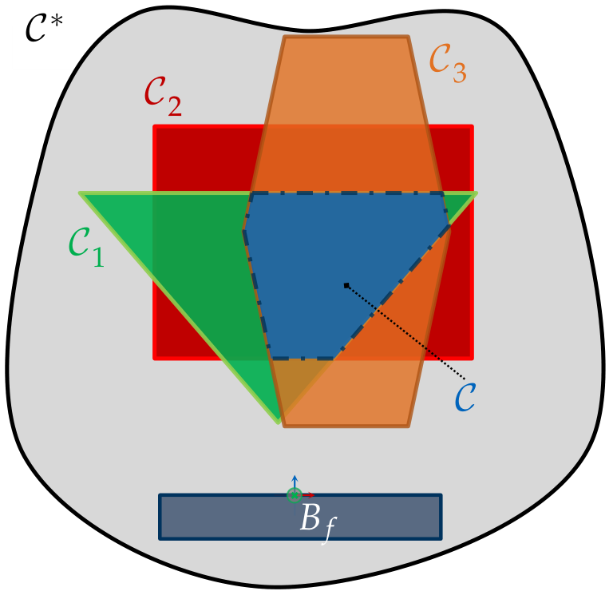
PDF p10 · 面板 b/c · 优先级 1 · FoV、碰撞、遮挡与可见性判定
Habitat：否（机器人视觉仿真）
适合表达 FoV、距离、姿态和空间可行性的逐层求交。
区别：C-space 是连续空间，需要改成离散候选过滤。
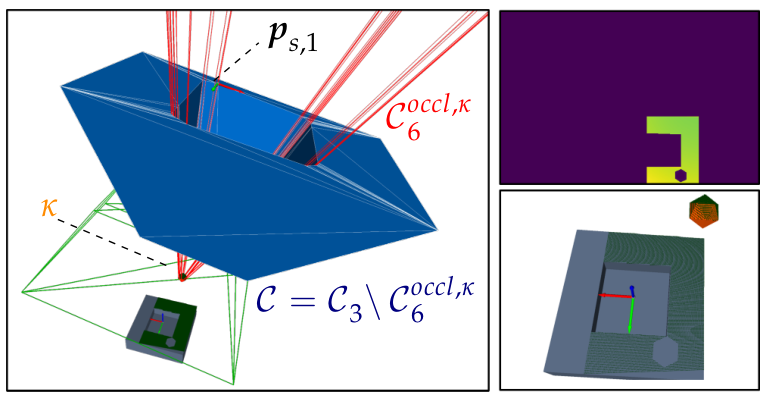
PDF p23 · 面板 b/c · 优先级 1 · FoV、碰撞、遮挡与可见性判定
Habitat：否（机器人视觉仿真）
直接参考通过/拒绝视角和障碍物造成的不可见区域。
区别：原文是连续 manifold，不是 Habitat raycast。
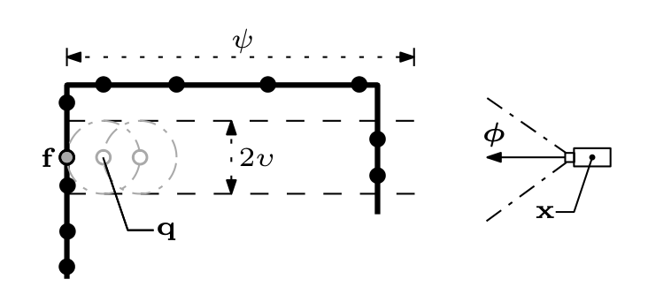
PDF p10 · 面板 b/c · 优先级 1 · FoV、碰撞、遮挡与可见性判定
Habitat：否（UR10/UAV 仿真）
适合画目标样本到 camera 的 LOS 检查。
区别：使用点云邻域，不是你的 analytic/voxel geometry。
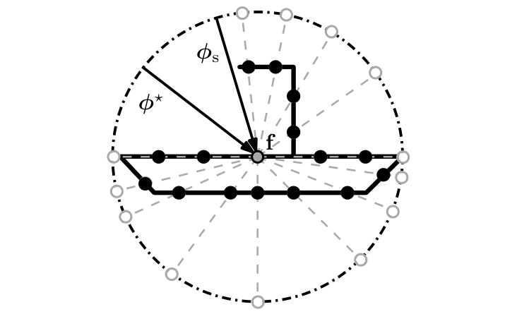
PDF p11 · 面板 b/c · 优先级 1 · FoV、碰撞、遮挡与可见性判定
Habitat：否（UR10/UAV 仿真）
适合表达被障碍方向排除后保留可见朝向。
区别：二维几何示意，需要转成你的 3D 相机姿态。
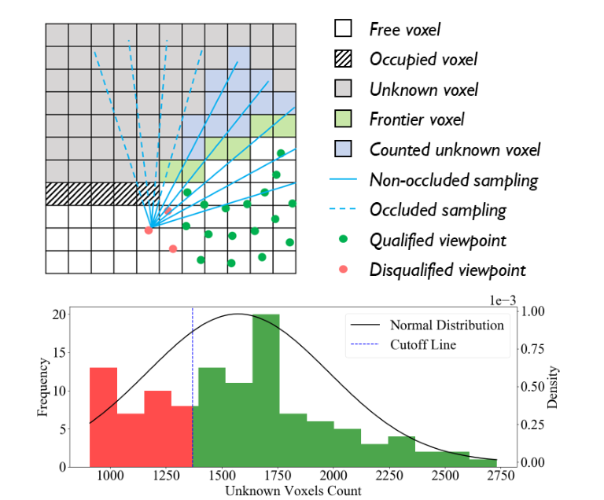
PDF p8 · 面板 b/c · 优先级 1 · FoV、碰撞、遮挡与可见性判定
Habitat：否（ROS Noetic + Open3D 四旋翼仿真）
适合做 Fig.6(c) 的 pass/fail 对照。
区别：判据是未知体素数量，不是你的 Q_i。
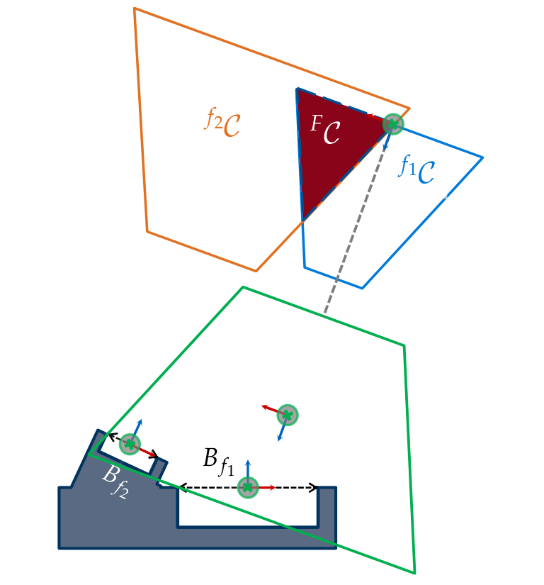
PDF p27 · 面板 b/c · 优先级 2 · FoV、碰撞、遮挡与可见性判定
Habitat：否（机器人视觉仿真）
借鉴两个目标特征的可观测空间求交，表达同一相机必须同时满足多个样本约束。
区别：这是同一视角满足多个特征，不能解释成多个视角互补覆盖。
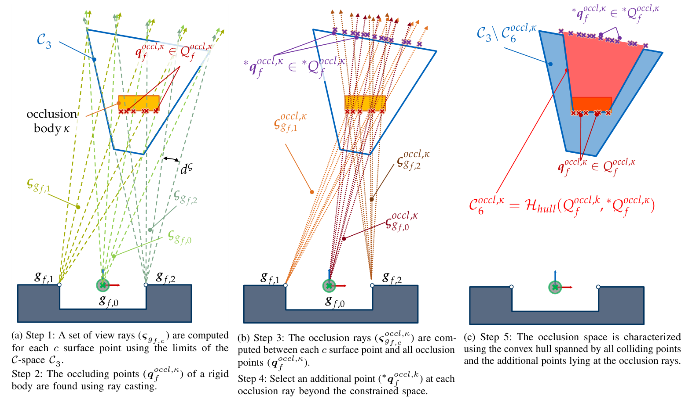
PDF p23 · 面板 b/c · 优先级 1 · FoV、碰撞、遮挡与可见性判定
Habitat：否（机器人视觉仿真）
借鉴 target samples → ray intersections → occluded region 的因果过程。
区别：原算法构造连续遮挡空间；你的方法逐个候选执行 LOS 检查。
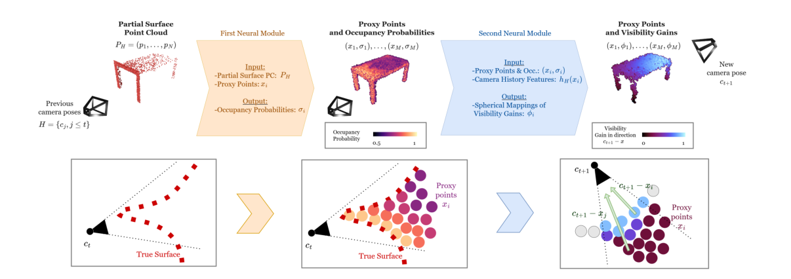
PDF p3 · 面板 d · 优先级 1 · 评分、互补性与候选压缩
Habitat：否（主动三维重建）
对应 visible sample count / coverage gain。
区别：SCONE 用学习模块预测 visibility。
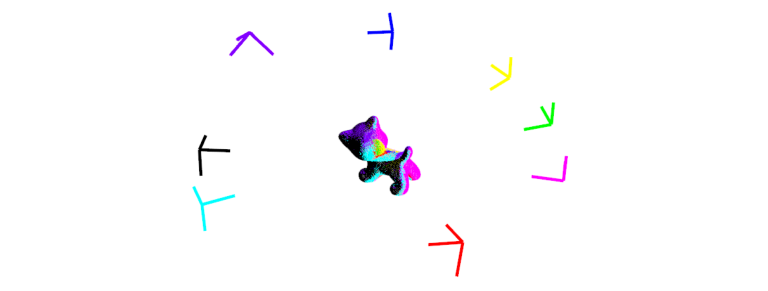
PDF p9 · 面板 d · 优先级 1 · 评分、互补性与候选压缩
Habitat：否（OctoMap/object reconstruction）
是 Fig.6(d) 互补视角和 set-cover 的直接参考。
区别：不包含你的 terminal cost。
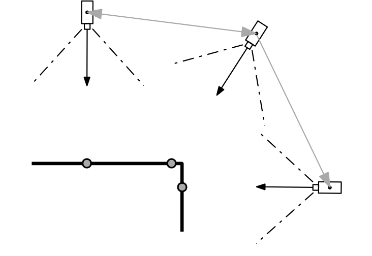
PDF p12 · 面板 d · 优先级 1 · 评分、互补性与候选压缩
Habitat：否（UR10/UAV 仿真）
可借鉴视角之间按可见性连接，再选择代表 view。
区别：你的候选规模更小，还要考虑 azimuth diversity。
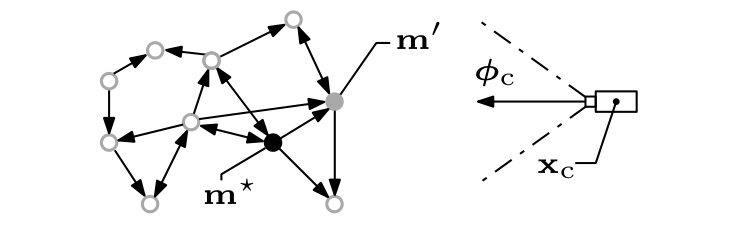
PDF p13 · 面板 d · 优先级 1 · 评分、互补性与候选压缩
Habitat：否（UR10/UAV 仿真）
可参考 visible gain 与 travel cost 同时存在的图示。
区别：SEE 使用 outdegree，不是你的完整 cost。